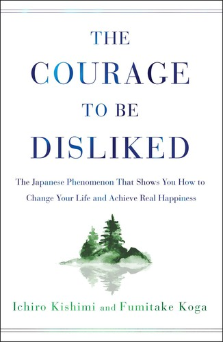
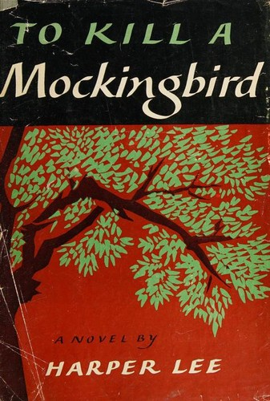
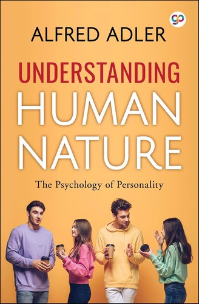
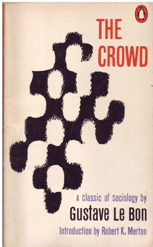

Computer Vision
覆盖目标检测、医学图像分割、面向视触觉传感的稠密光流估计与多相机跟踪，并完成数据、实验与误差闭环。
以数据采集与标注、模型训练、对比与消融实验、误差分析构成面向真实场景的可验证闭环。
I focus on computer vision, deep learning, edge AI, and robot learning, bringing models into real-world scenarios.
聚焦深度学习、视觉感知、边缘部署与机器人学习
覆盖目标检测、医学图像分割、面向视触觉传感的稠密光流估计与多相机跟踪，并完成数据、实验与误差闭环。
以数据采集与标注、模型训练、对比与消融实验、误差分析构成面向真实场景的可验证闭环。
面向 Jetson、RV1126B、RK3588 完成 ONNX/TensorRT/RKNN 部署与PTQ INT8优化，兼顾相机链路和现场性能。
围绕视触觉数据、多模态策略学习、仿真到现实迁移与真机验证开展具身智能研究，并向世界模型方向拓展。
维护视触觉光流解算 SDK，参与硬件优化和算法部署，以实验设计、消融和基准测试支撑研究交付。
正在加载仓库…
代码之外，每个人都有自己的人生branch
Life Archive / 生活档案
只要你不混乱，时间永远够用
As long as you stay clear, there is always enough time.
这里不是技术栈的延伸，而是生命的缤纷。欢迎参观代码之外，我的另一个 branch
浮光里活出真我，人不算白过。
登高峰一秒 得獎一秒 再破紀錄的一秒
港灣晚燈 山頂破曉 摘下懷念 記住美妙
升職那刻 新婚那朝 成為父母的一秒
要拍照的事 可不少
陈奕迅 -《沙龙》
现实需要答案，游戏允许我们反复尝试。
這趟旅行若算開心
亦是無負這一生
陈奕迅 -《落花流水》
音乐不只是旋律，也是情绪的备份。
音樂 話劇 詩詞和舞蹈
揉合生命 千樣好
陈奕迅 -《沙龙》
书里不一定有标准答案，但会有新的角度。
我知 日後 路上或沒有更美的邂逅
但當你智慧都醞釀成紅酒
仍可一醉自救
陈奕迅 -《葡萄成熟时》

The Courage to Be Disliked Book
To Kill a Mockingbird Book
Understanding Human Nature Book
The Crowd: A Study of the Popular Mind Book如果某个瞬间有共鸣，欢迎来信
Contact / 联系
Questions, collaboration, or project ideas are welcome.
 League of Legends
China Official
League of Legends
China Official
 Plants vs. Zombies
Steam
Plants vs. Zombies
Steam
 It Takes Two
Steam
It Takes Two
Steam
 Titanfall
Steam
Titanfall
Steam